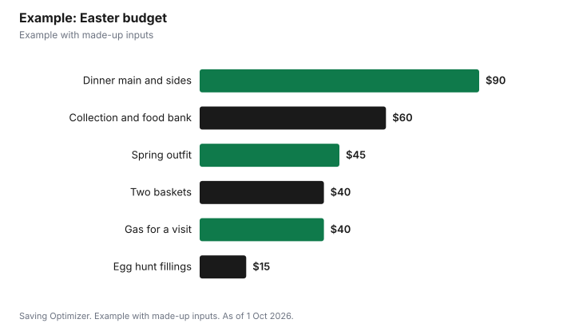

Events · Canada
Easter Budget Canada 2027: Dinner, Chocolate, Baskets and the Long Weekend
Easter Sunday 2027 is 28 March, which makes Good Friday 26 March, and Good Friday is a public holiday in Ontario under the Employment Standards Act. That early date means Easter lands only a few weeks after many March breaks, so the cheapest plan is to set your budget in early March: a fixed cap per child for baskets, a dinner plan built around one main dish plus potluck sides, and free community egg hunts instead of paid events. Statistics Canada says the average household spent $8,579 on store-bought food in 2023, so one holiday dinner is a modest share of the year if you plan it.
Key takeaways
- Easter Sunday 2027: 28 March (Royal Observatory Greenwich).
- Good Friday 2027: 26 March; a public holiday in Ontario.
- Eastern Orthodox Easter can be one, four or five weeks later.
- Set a per-child basket cap and stick to it.
- Buy discounted chocolate and decor after Easter for next year, if it keeps.
- Example with made-up inputs: a $290 Easter for a family of four.
Easter dates in 2027
The Royal Observatory Greenwich explains that Easter is the first Sunday after the full Moon that occurs on or after the spring equinox, and that churches use an artificial equinox fixed at 21 March and a calculated full Moon rather than the astronomical ones. If that full Moon falls on a Sunday, Easter is the next Sunday. For 2027 the date is 28 March. The Observatory notes that the date used by Eastern churches can be one, four or five weeks later. If your family celebrates both, check your parish calendar before booking travel.
| Day | Date in 2027 | Note |
|---|---|---|
| Good Friday | Friday 26 March | Public holiday in Ontario |
| Holy Saturday | Saturday 27 March | — |
| Easter Sunday | Sunday 28 March | Royal Observatory Greenwich |
| Orthodox Easter | Can be 1, 4 or 5 weeks later | Check your parish |
Is Good Friday a holiday where you live?
Ontario's guide to the Employment Standards Act lists nine public holidays, and Good Friday is one of them. Eligible employees generally get the day off with public holiday pay. If they work it, the guide describes two options: their regular rate plus a substitute holiday, or public holiday pay plus premium pay of 1½ times their regular rate for each hour worked. The guide also says that while some employers give Easter Sunday or Easter Monday off, the employer is not required to do so under the Act. Other provinces set their own holiday lists, and some workplaces fall under federal rules instead, so check the labour standards page that applies to you.
For budgeting, a paid day off matters. If you are paid hourly and your workplace is not covered, plan for a short pay week. If you are travelling, note that a long weekend tends to make flights and hotels busier.
Where the money goes
Easter costs fall into five groups: the main meal, baskets and chocolate, egg hunt supplies, new clothes for church or photos, and travel or outings. Statistics Canada's annual averages help put this in context.
| Category | Average per household, 2023 |
|---|---|
| Food purchased from stores | $8,579 |
| Food purchased from restaurants | $3,316 |
| Clothing and accessories | $2,716 |
Divide the store-food figure by 52 and an average household spends about $165 a week on groceries. An Easter dinner that costs about the same as one extra week of groceries is a reasonable yardstick.
Dinner for less
Pick one main, such as ham, lamb, turkey or a vegetarian dish, and let guests bring sides and dessert. Compare the unit price on the shelf tag, since a larger cut can cost less per kilogram even with leftovers. Holiday mains often appear in flyers before Easter, so plan your menu around what is on sale that week rather than a fixed recipe. Brunch is cheaper than dinner because eggs, bread and fruit cost less than a roast.
Baskets, chocolate and egg hunts
Baskets are where budgets drift. Set a cap per child, then fill it with one small toy or book, a few chocolates and something useful like a spring hat or sidewalk chalk. Reuse baskets and plastic eggs from past years. Many municipalities, libraries and community groups run free or low-cost egg hunts on the long weekend, so check your city's events page in March. A backyard hunt with eggs you already own costs only the fillings.
| Approach | Example cost per child | Trade-off |
|---|---|---|
| Pre-made store basket | $30 | Fast, but more packaging and less choice |
| Build your own | $18 | Takes a shopping trip |
| One gift plus small chocolates | $15 | Simple, less sugar |
| Experience instead (a movie or outing) | $12 | Less clutter |
Travel and outings on the long weekend
If you plan to visit family, compare driving with the bus or train and book early, since long weekends draw more travellers. Free or low-cost outings include parks, conservation areas that open for spring, library programs and community church services or concerts. If you want a paid outing, check whether a museum or zoo membership you already hold covers it, or whether a library pass program lends free admission. Building one free activity into each day of the long weekend keeps the spending focused on the meal and the baskets, where it matters most to most families.
Example with made-up inputs
These numbers are an example with made-up inputs. A family of four hosts six relatives for Easter dinner. They spend $90 on a ham and ingredients for two sides, while guests bring dessert and salad. Two children get baskets capped at $20 each, so $40. Egg fillings for a backyard hunt cost $15, and they reuse last year's plastic eggs. They buy one $45 spring outfit for a growing child, spend $40 on gas to visit grandparents on Good Friday, and set aside $60 for a church collection and a food-bank donation. The total is $290.
| Item | Cost |
|---|---|
| Dinner main and sides | $90 |
| Two baskets at $20 | $40 |
| Egg hunt fillings | $15 |
| One spring outfit | $45 |
| Gas for a family visit | $40 |
| Collection and food bank | $60 |
| Total | $290 |

Steps
- Mark 26 to 28 March 2027 in your calendar now, and check Orthodox dates if relevant.
- Confirm whether Good Friday is a paid holiday for you.
- Set a total budget, then a cap per child for baskets.
- Plan the dinner as a potluck and shop the flyer sales.
- Look up free community egg hunts in early March.
- After Easter, buy discounted supplies for next year only if they keep.
Common mistakes
- Assuming Easter Monday is a holiday everywhere.
- Buying chocolate early, then buying it again when it is gone.
- Planning a dinner that needs a cut you have never cooked.
- Booking long-weekend travel late, when prices are higher.
More holiday planning: an Eid budget and a hosting budget.
Sources
- Royal Observatory Greenwich, When is Easter?, rmg.co.uk, as of 1 Oct 2026.
- Government of Ontario, Your guide to the Employment Standards Act: Public holidays, ontario.ca, as of 1 Oct 2026.
- Statistics Canada, Table 11-10-0222-01 Household spending, Canada, regions and provinces (2023), as of 1 Oct 2026.
- Basket costs and the family example are made-up inputs.
Frequently asked questions
When is Easter 2027?
Easter Sunday is 28 March 2027, according to the Royal Observatory Greenwich.
When is Good Friday 2027?
Friday 26 March 2027, two days before Easter Sunday.
Is Good Friday a public holiday in Ontario?
Yes. Ontario's Employment Standards Act lists Good Friday among its nine public holidays.
Is Easter Monday a holiday in Ontario?
Ontario's guide says some employers give Easter Monday off, but they are not required to under the Employment Standards Act.
When is Orthodox Easter 2027?
The Royal Observatory Greenwich says the date used by Eastern churches can be one, four or five weeks later than Western Easter. Check your parish calendar.
How do I keep Easter baskets cheap?
Set a cap per child, build baskets yourself, reuse baskets and eggs, and use free community egg hunts.
Researched and drafted with AI assistance and fact-checked against official Canadian sources. How we create content.
Disclosure: Saving Optimizer may earn a commission if a partner link is added later, such as a grocery or cashback offer type. No partnership is claimed on this page. Education only, not legal or employment advice.